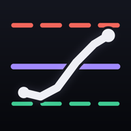
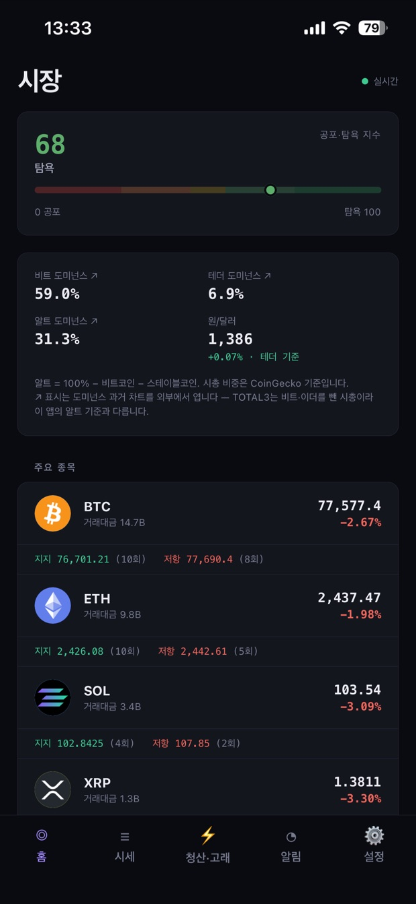
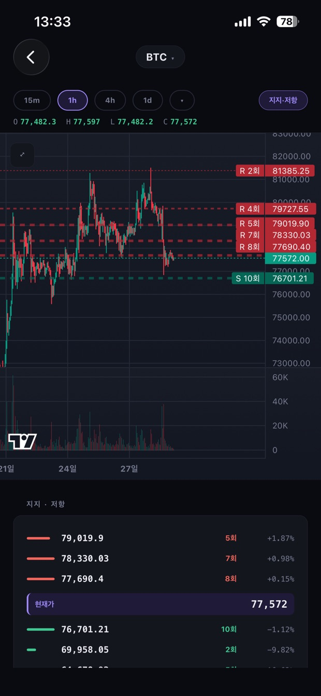
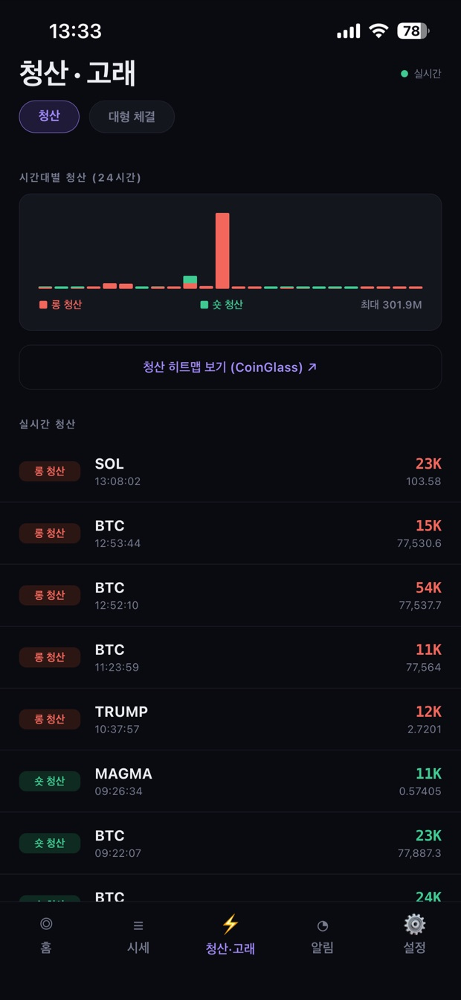
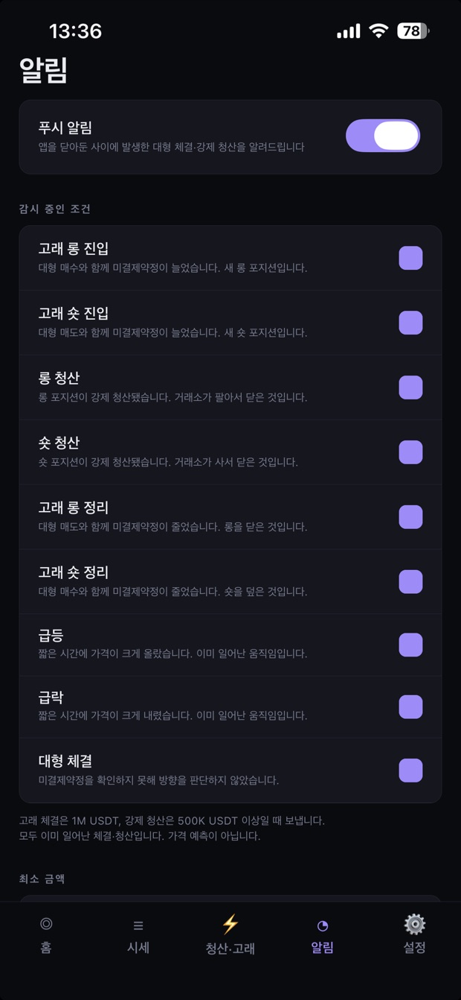

코인레벨 · CoinLevel시장에서 실제로 일어난 일만 보여줍니다
강제 청산이 터졌을 때, 고래가 들어왔을 때 알려드립니다. 오를지 내릴지는 말하지 않습니다.
로그인 없음 · 무료 · 광고와 인앱 결제 없음

무엇을 볼 수 있나요
강제 청산과 고래 체결
대형 체결을 미결제약정 변화와 함께 봐서 새 진입인지 정리인지 가릅니다. 확인하지 못하면 방향을 추측하지 않고 "대형 체결"로만 적습니다.
지지·저항 가격대
과거에 가격이 여러 번 반응했던 구간을 접촉 횟수와 함께 차트에 표시합니다. 지난 기록이며 앞으로의 움직임을 뜻하지 않습니다.
실시간 시세와 차트
바이낸스 선물 시장 기준. 캔들과 거래량, 이동평균, RSI를 한 화면에서 봅니다.
푸시 알림
앱을 닫아둔 사이 일어난 대형 체결과 강제 청산을 알려드립니다. 받을 종류와 최소 금액을 직접 고릅니다. iPhone 앱에서 받을 수 있습니다.
경제 지표 기록
CPI·FOMC 같은 발표 일정과, 지난 발표 전후로 비트코인이 실제로 어떻게 움직였는지를 보여줍니다. 호재·악재를 판정하지 않습니다.
시장 뉴스
공포·탐욕 지수, 도미넌스와 함께 주요 매체의 제목과 요약을 모읍니다. 언론사명을 표기하고 전문은 원문 링크로 연결합니다.
화면



투자 자문이 아닙니다
코인레벨은 시장에서 관측된 데이터를 그대로 보여주는 정보 제공 도구입니다. 거래 실행, 중개, 투자 자문 기능이 없으며 특정 종목의 매매를 권유하지 않습니다.
지지·저항 가격대는 과거의 기록이고, 알림은 이미 발생한 사건을 전달할 뿐입니다. 투자 판단과 그 결과에 대한 책임은 이용자 본인에게 있습니다.
데이터 출처
시세·청산·미결제약정은 Binance 공개 API, 공포·탐욕 지수는 Alternative.me, 뉴스는 각 언론사 RSS에서 가져옵니다. 자세한 설명은 지원 페이지에 있습니다.
문의
자주 묻는 것과 알림 문제 해결은 지원 페이지에서 확인하세요.